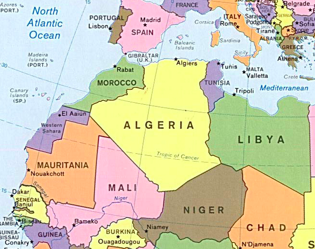

-
Общая информация
Алжир (араб. الجزائر аль-Джазаир), полная официальная форма — государство в Северной Африке в западной части Средиземноморского бассейна, крупнейшее по территории африканское государство. Официальный ящзык — арабский.
Географическое положение
Алжир граничит с Марокко на западе, Мавританией и Мали — на юго-западе, Нигером — на юго-востоке и Ливией и Тунисом — на востоке. Большая часть территории страны лежит в пустыне Сахара. Столица — город Алжир.
-
Климат
Показатель Янв. Фев. Март Апр. Май Июнь Июль Авг. Сен. Окт. Ноя. Дек. Год Абсолютный максимум, °C 11,1 17,3 22,4 29,1 33,6 35,0 39,4 39,9 33,8 29,5 23,2 14,7 39,9 Средний максимум, °C -1,5 -0,2 5,0 13,7 20,4 23,5 24,5 24,1 18,6 12,1 4,5 0,4 12,1 Средняя температура, °C -4,3 -3,3 1,3 8,9 15,1 18,3 19,5 18,9 13,8 7,9 1,8 -2 7,9 Средний минимум, °C -6,8 -5,9 -1,7 4,9 10,6 14,0 15,3 14,6 9,9 4,6 -0,3 -4,2 4,6 Абсолютний мінімум, °C -31,1 -32,2 -24,9 -10,4 -2,4 2,4 5,8 3,3 -2,9 -17,8 -21,9 -30 -32,2 Норма осадков, мм 38 37 36 49 53 75 85 56 58 37 51 46 621 -
Административное деление
Алжир разделён на:
- 48 вилайетов
- 553 округа
- 1541 коммуну
Ниже перечислены все 48 вилайетов.
- Адрар
- Эш-Шелифф
- Лагуат
- Умм-эль-Буаги
- Батна
- Беджая
- Бискра
- Бешар
- Блида
- Буира
- Таманрассет
- Тебесса
- Тлемсен
- Тиарет
- Тизи-Узу
- Алжир
- Джельфа
- Джиджель
- Сетиф
- Саида
- Скикда
- Сиди-Бель-Аббес
- Аннаба
- Гельма
- Константина
- Медеа
- Мостаганем
- Мсила
- Маскара
- Уаргла
- Оран
- Эль-Баяд
- Иллизи
- Бордж-Бу-Арреридж
- Бумердес
- Эль-Тарф
- Тиндуф
- Тисемсильт
- Эль-Уэд
- Хеншела
- Сук-Ахрас
- Типаза
- Мила
- Айн-Дефла
- Наама
- Айн-Темушент
- Гардая
- Гализан (Релизан)
-
Культура
В целом культура страны носит общеарабские черты, дополненные турецким и французским влиянием. Государственной религией Алжира является ислам, что закреплено в конституции страны. Также насчитывается небольшое количество христиан и иудеев.
-
Литература
Литература в стране развивается на 3 основных языках — арабском, французском и кабильском.Исторически литература в Алжире начинает развиваться с XVI века и была связана с борьбой за независимость. Среди современных алжирских писателей известен романист Ясмина Хадра, 2 романа которого номинировались на Дублинскую литературную премию.
-
Изобразительное искусство
В Марокко, Алжире и Тунисе традиции средневекового зодчества были органично использованы в процессе формирования национальных художественных культур. В Марокко еще в 17 и даже в начале 18 в. возводились значительные богато декорированные постройки в традиционном стиле. В Алжире и Тунисе после захвата их Турцией, несмотря на распространение в культовом зодчестве османских архитектурных канонов, тоже не исчезли вековые художественные традиции. Порожденные творчеством народа, они до сих пор сохраняют свое значение в зодчестве и декоративном искусстве. О средневековой живописи Северной Африки и мусульманской Испании известно очень мало. Сохранились рукописи 12 и последующих столетий, украшенные превосходным, необычайно изысканным геометризированным орнаментом, в расцветке которого преобладают золото и интенсивный синий тон.
-
Театр
Успешно развивались те коллективы, которые находились на попечении государства. Примером может служить Национальный театр Алжира, открытый согласно правительственному декрету в январе 1963 г. Благодаря материальной поддержке государства Национальный театр за сравнительно короткий срок добился значительных успехов: разнообразия репертуара (классическая и современная драматургия европейских стран, произведения алжирских авторов), расширения труппы и совершенствования актерского мастерства (многие актеры, режиссеры и драматурги получили известность далеко за пределами страны — Мустафа Катеб, Ахмед Айяд, известный под псевдонимом Руишед, и др.), улучшения технических возможностей театра и привлечения массового зрителя. Только в 1965 г. театр показал девять пьес, сыграл 146 спектаклей, собрав 60 тыс. зрителей. Тогда же были созданы его филиалы в Константине и Оране, а большая труппа совершала гастрольные поездки по всей стране. По решению правительства в 1972 г. началась децентрализация театра: региональные театры появились в Константине и Оране (на базе филиалов Национального театра), а позднее в Аннабе, Сиди-Бель-Аббесе, Беджайе, Батне, что способствовало расширению творческой базы и появлению плеяды молодых талантливых драматургов, режиссеров, актеров. В последние годы широкую известность получили Захир Бузрар, Абдель-кадер Аллула и Джамель Хамуда, сочетающие в себе талант драматурга, режиссера и актера. Однако опыт развития алжирского театра также сопровождался рядом негативных моментов: чрезмерная опека со стороны государства со временем явилась тормозом для его дальнейшего творческого роста, а ухудшение экономического положения страны в целом и сокращение государственных субсидий поставили под вопрос само существование театра.
-
Кинематограф
Алжирская кинематография зародилась во времена войны за независимость. Фронт национального освобождения становится инициатором организации в 1957 году Школы кинематографической подготовки. Позднее, в 1961 году образуется специальный киноотдел непосредственно при Временном революционном правительстве. При непосредственном участии и содействии этих организаций осуществляется съёмка хроникально-документальных фильмов «Алжир в огне» (1958, французский режиссёр Р. Вотье), «Ясмина» и «Голос народа» (оба 1961, режиссёр Мохаммед Лахдар-Хамина) и других. Тема борьбы африканских народов за независимость и в дальнейшем находила широкое отражение в документалистике («Алжир, год первый», 1963, режиссёр Мохаммед Лахдар-Хамина; «Заря проклятых», 1965, режиссёр А. Рашди). После провозглашения независимости в 1962 году правительство национализирует кинотеатры. В 1964 была создаётся Национальная алжирская синематека, а в 1969 году вводится монополия государства на производство и прокат фильмов. Первый полнометражный художественный фильм «Такой молодой мир», снятый французским режиссёром Ж. Шарби, получает в 1965 году премию московского кинофестиваля. Так же, как и первые документальные фильмы, он обращается к теме войны. Судьбы детей, невольно оказавшихся участниками жестоких событий, стали его основной темой. В дальнейшем алжирские кинокартины не раз удостаивались самых высоких наград кинематографического сообщества. Премии Каннского кинофестиваля получают «Ветер с Ореса» (1966) и «Хроника огненных лет» (1975) режиссёра Мохаммеда Лахдар-Хамина. «Битва за Алжир» (1966, режиссёр Д. Понтекорво) завоёвывает главную премию Венецианского кинофестиваля. Ведущие режиссёры 1970-х годов: Мохаммед Лахдар-Хамина («Декабрь», 1972, «Ветер пустынь», 1982), А. А. Тульби («Преследуемый», 1969, «Ключ к тайне», 1971, «Нуа», 1972), М. Аллуаш («Омар Гатлато», 1977, премия Московского кинофестиваля, «Приключения героя», 1978), М. Буамари («Угольщик», 1972, «Наследие», 1975, «Первый шаг», 1980), Риад («Инспектор Тахар», 1969, «Мы вернёмся», 1973, «Ветер с юга», 1975, «Анатомия одного заговора», 1978, специальная премия кинофестиваля в Карловых-Варах), Рашди («Али в стране миражей», 1979). В XXI веке алжирский кинематограф продолжает развиваться, в частности премии за лучший фильм и лучшую музыку на XXVIII фестивале в Валенсии (2007 год) получил фильм алжирского режиссёра Амор Хаккар Жёлтый дом.
-
Кухня
Национальная кухня Алжира формировалась под влиянием своих ближайших соседей, вобрав в себя лучшие кулинарные традиции арабской, французской, турецкой, марокканской и тунисской кухонь. Существует более широкое понятие — «магрибская кухня» , которая объединяет кухни народов, проживающих в Северной Африке, в том числе и Алжира. Но, несмотря на мощное внешнее влияние, национальная кухня Алжира сумела сохранить свою неповторимость, оригинальность и местный колорит. Кухня в этой стране — особая часть культуры, которую, по достоинству, оценят любители гастрономического туризма и самые изысканные гурманы. Основным национальным блюдом считается Кус-Кус. Готовят его из манной крупы. Крупу смачивают в оливковом масле, затем из неё делают небольшие комочки, добавляют разные специи и готовят на пару. Подается, как готовое блюдо, или в качестве гарнира к рыбе, мясу и овощам. Иногда к Кус-Кусу добавляют орехи, сухофрукты, изюм и получается уже сладкий десерт, который называется Мас-Фус. В национальной кухне Алжира полностью отсутствует свинина и алкогольные напитки. Пьют алжирцы различные соки, молоко, зелёный чай. Особой популярностью пользуется крепкий арабский кофе. Алжирские повара превосходно готовят, а когда дело касается туристов, то стараются вдвойне и всегда рады угодить гостям, своими неповторимыми национальными блюдами.
-
-
Образование
В 1962 году 18 марта был подписан указ о независимости Алжира, и первая задача, которая встала перед страной - это борьба с безграмотностью. Уже в 1963 году правительство независимой республики издало указ, в котором образование становилось обязательным. Были внесены изменения в обучение граждан независимой республики, на основании национальной культуры и возросших потребностей новой независимой страны. Обучение в школах велось на французском языке и арабском, с плавным переходом обучения только на арабский язык. Обучение в начальной школе проходило с 6 лет, и было 6 летним (неполная средняя школа заканчивалась 4 летним обучением). Среднюю школу заменяли лицеи и общеобразовательные колледжи, обучение в средней школе проходило 7 лет. В 1966 году был разработан и принят десятилетний план по развитию образования в независимой стране. Технические отделения и факультеты лицеев, а также специальные колледжи давали обучающимся гражданам профессионально-техническое образование. Учителей в начальные школы подготавливали в средних школах с обязательным двух или четырех годичным курсом специальной подготовки. Будущие преподаватели лицеев проходили свое обучение в университете. Общие достижения Алжирской Демократической Народной Республики составили: более двухсот тысяч учащихся, 170 высших учебных заведений (ВУЗов), 7 университетов, 700 профессионально-технических заведений.
-
Спорт
-
Летние олимпийские игры
№ ОИ Год Место проведения Страна Место 1 XVIII 1964 Токио Япония 91 2 XIX 1968 Мехико Мексика 17, 105 3 XX 1972 Мюнхен ФРГ 0 4 XXII 1980 Москва СССР 10, 13, 15 5 XXIII 1984 Лос-Анджелес США 26, 30 6 XXIV 1988 Сеул Республика Корея 39, 95 7 XXV 1992 Барселона Испания 7 8 XXVI 1996 Атланта США 5, 9 9 XXVII 2000 Сидней Австралия 3, 5 10 XXVIII 2004 Афины Греция 4 11 XIX 2008 Пекин Китай 2, 6 12 XX 2012 Лондон Великобритания 26
-
-
Зимние олимпийские игры
№ ОИ Год Место проведения Страна Место 1 XVI 1992 Альбервиль Франция 85, 90 2 XX 2006 Турин Италия 40, 51 3 XXI 2010 Ванкувер Канда 84